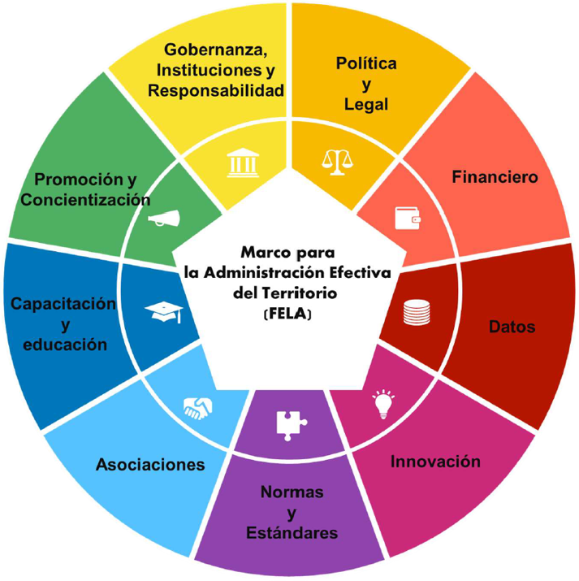
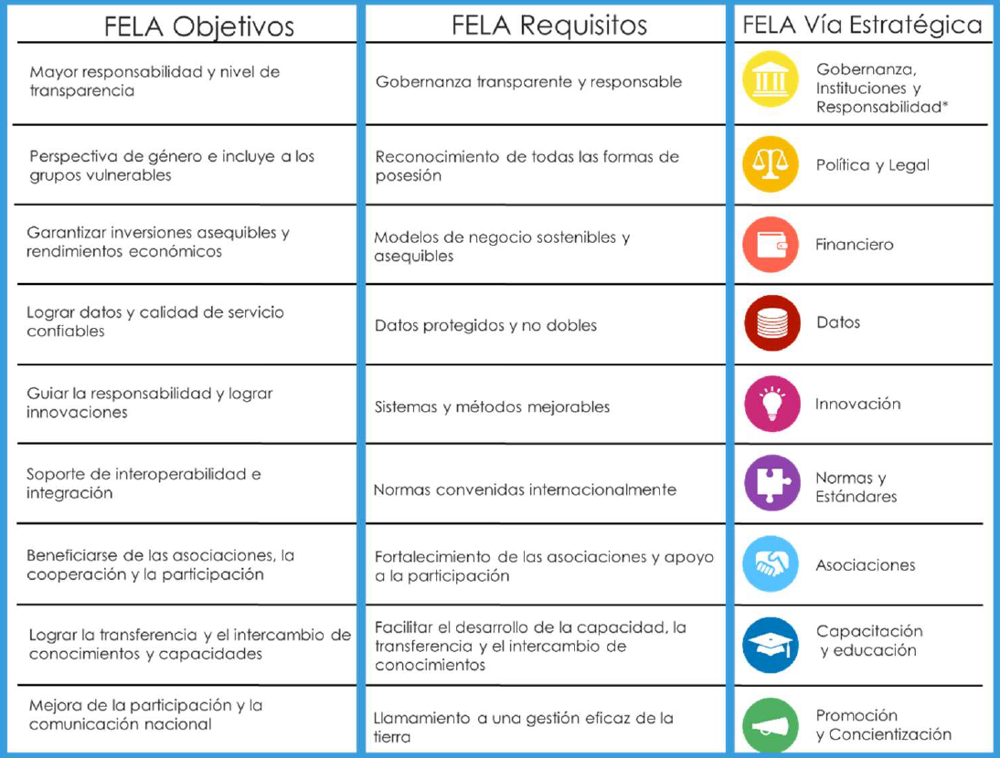

FELA
(Framework for Effective Land Administration)
Marco para la Administracion Efectiva del Territorio
La tierra siempre ha sido esencial para la humanidad, no solo como espacio físico para habitar y desarrollarse, sino también como un pilar fundamental de la economía y la estabilidad de los países. En este contexto, los sistemas de administración del territorio constituyen la base para la gestión eficiente de este valioso recurso. Sin embargo, en muchas partes del mundo, estos sistemas aún presentan importantes deficiencias: las relaciones entre las personas y la tierra no están completamente documentadas —como ocurre con catastros incompletos o desactualizados—, existen marcos legales ambiguos, y la coordinación institucional es ineficiente, con datos no estandarizados ni compartidos adecuadamente. Estas limitaciones dificultan una gobernanza territorial eficaz y evidencian la necesidad urgente de adaptar los sistemas existentes a las demandas sociales, económicas y tecnológicas contemporáneas.
En respuesta a estos desafíos, se ha desarrollado el Marco para la Administración Efectiva del Territorio (FELA, por sus siglas en inglés) con miras a contribuir al diseño e implementación de sistemas de administración de tierras modernos, eficientes y adecuados al propósito. Dado que la mayoría de la población no goza de derechos seguros sobre la tierra, FELA cobra relevancia al promover sociedades más sostenibles e inclusivas, acelerando los esfuerzos para asegurar los derechos sobre la tierra y la propiedad para todos. Este marco proporciona una guía estratégica hacia los planes de acción específicos de los países y aboga por el fortalecimiento continuo de los procedimientos, técnicas y herramientas de administración y manejo territorial. El marco enfatiza que la administración del territorio debe ser conforme para el propósito, apropiada y adecuada, interoperable y sostenible, flexible e inclusiva.
FELA nace del Comité de Expertos de las Naciones Unidas sobre Administración del Territorio, integrado en el grupo de esta organización sobre la gestión de la información geoespacial (UN-GGIM) y es una referencia para desarrollar, renovar, reformar, fortalecer, modernizar o monitorear la administración territorial, consciente de las prioridades y circunstancias nacionales. Se alinea con el Marco Integrado de Información Geoespacial (UN-IGIF) y tiene como fin apoyar el cumplimiento de los Objetivos de Desarrollo Sostenible (ODSs) proporcionando una visión integral para la administración efectiva del territorio.
FELA busca proporcionar una guía para mejorar las prácticas del manejo de territorio de los países, con el objetivo de abordar diferencias críticas en la gobernanza de la tierra y promover el desarrollo sostenible, garantizando que los sistemas de administración del territorio sean eficientes, igualitarios y responsables con las necesidades sociales.
Figura 1. Nueve lineamientos del marco para la administración efectiva del territorio
Los requisitos y objetivos del FELA están alineados directamente con las vías estratégicas de UN-IGIF, por consiguiente, las nueve vías estratégicas para guiar su implementación abarcan: gobernanza, políticas, aspectos financieros, gestión de datos, innovación, normas y estándares, asociaciones, capacitación y educación, promoción y comunicación. Estas vías tienen como finalidad promover relaciones seguras entre las personas y la tierra, apoyar la innovación responsable, y fomentar alianzas para el desarrollo social, medioambiental y económico
Figura 2. Visión general de los objetivos, requisitos y rutas de FELA
Al alinearse con UN-IGIF, FELA asegura que las prácticas de administración del territorio están integradas con estrategias de gestión de información geoespacial, promoviendo la interoperabilidad y el intercambio de datos entre diferentes sectores. Esto facilita la toma de decisiones basada en evidencia, mejora la coherencia de las políticas y apoya el seguimiento eficaz del progreso hacia el cumplimiento de los ODSs.
En el presente proyecto se propuso identificar el estado de divulgación de FELA. Para ello se realizó una investigación documental de los eventos realizados en el mundo, se organizó esta información en tablas que permitieron la posterior síntesis de informacion que se visualiza en el apartado MAPA de esta página.
Información de las vistas
Para la representación de eventos en los que se abordó el Marco para la Administración Efectiva del Territorio, se han dispuesto diferentes formas de visualización: por eventos, ponentes, idioma y organismo organizador.
Vista por Eventos
En la vista por eventos se ofrecen dos opciones de visualización: por país y por ciudad. En la modalidad por país, se agrupan los eventos que han tenido lugar en un determinado país; al desplegar la información se muestra el detalle de cada evento, los títulos de las presentaciones y los ponentes correspondientes. En la visualización por ciudad, los eventos se ubican geográficamente sobre la ciudad donde se realizaron, agrupando aquellos que coinciden en la misma ubicación.
Vista por Ponentes
En esta vista se identifican en el mapa los países de origen de los ponentes. Así, un país que presente más de un ponente indica la participación de varios representantes provenientes de dicho territorio.
Vista por Idiomas
En la visualización por idiomas, los eventos se organizan según el idioma en que se impartieron las ponencias, siendo inglés, español y árabe los idiomas utilizados.
Vista por Organismos
En la vista por organismos, los eventos se agrupan de acuerdo con las diferentes agencias y entidades que los organizaron, tales como la FIG, UN-GGIM, CPCI, entre otros.
Nota
El punto visualizado en medio del Atlántico corresponde a eventos que se realizaron en modalidad en línea.
El presente proyecto surge en colaboracion de:
Cátedra de Nova Cartografía
El desarrollo de este proyecto fue posible gracias a la financiación de Nova Cartografía y de la Cátedra homónima adscrita a la Escuela Técnica Superior de Ingeniería Geodésica, Cartográfica y Topográfica (ETSIGCT) de la Universitat Politècnica de València (UPV). En el marco de esta Cátedra se convocaron becas de I+D+i, una de las cuales permitió la realización de este trabajo.
CCASAT
Coordinación Cartográfica en el Sistema de Administración del Territorio (CCASAT) es un grupo con sede en la UPV, España; en el Departamento de Ingeniería Cartográfica, Geodesia y Fotogrametría (DICGF) y en la ETSIGCT.
Elsie-Yadira Fernández-Rea
Estudiante de Master en Ingeniería Geomática y Geoinformación de la UPV. Especializada en Sistemas de información geográfica y desarrollo web.
Carmen Femenía-Ribera
Profesora Titular de Catastro en la UPV desde 1998. Doctora Ingeniera en Geodesia y Cartografía. Departamento de Ingeniería Cartográfica, Geodesia y Fotogrametría. Escuela de Ingeniería Topográfica. Especialista en catastro y administración del territorio.
Gaspar Mora-Navarro
Profesor de sistemas de información geográfica y desarrollo web. Doctor Ingeniero en Geodesia y Cartografía. Perteneciente al DICGF, de la UPV. Escuela de Ingeniería Topográfica. Especializado en Sistemas de Información Geográfica, bases de datos geoespaciales, modelos de datos, infraestructuras de datos espaciales, metadatos geográficos, y desarrollo web.